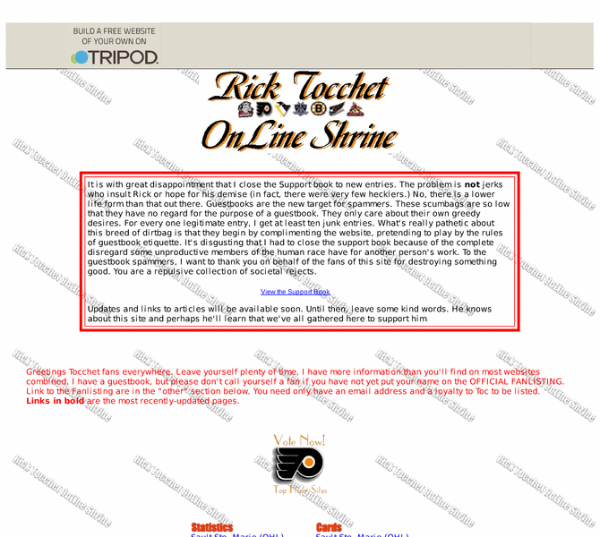

Previewing: Rick Tocchet OnLine Shrine Previewing: Rick Tocchet OnLine Shrine 
Use the left/right red arrow controls to navigate through this ring - Click the preview image to visit the member site.

Over 50 pages chronicle the OHL/NHL career of former NHL star and current Phoenix Coyotes assistant coach Rick Tocchet. Stats, cards, photos, career injuries and milestones, comics, audio/video clips, all star appearance information, quotes by and about, miscellaneous facts, online article links, fan club, & more! SIGN THE SUPPORT BOOK TO COMMUNICATE YOUR ENCOURAGEM
Rick Tocchet OnLine Shrine owned by:
 rt22 rt22
A member of the original webring since 03/24/2003.
|
|